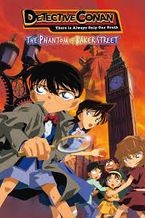
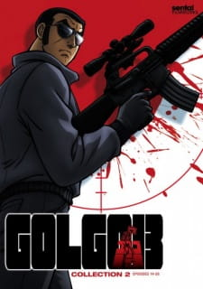

|

5. Detective Conan (250 million sold)Detective Conan also known as Case Closed, is a mystery manga series. It is the work of Gosho Aoyama, and it has been a part of Shogakukan's Weekly Shonen Sunday magazine since 1994. So far, the manga has 102 volumes and has sold over 250 million copies. |

4. Doraemon (300 million sold)Doraemon is a manga series made specifically for kids. Written by Fujiko F. Fujio, it has over 1,000 chapters, which have been compiled into 45 volumes. Despite being catered toward a very specific demographic, Doraemon has sold over 300 million copies, mainly due to its funny yet interesting story. |

3. Golgo 13 (300 million sold)Golgo 13 is the oldest of the best-selling manga. It started serializing in 1968 in Shogakukan's Big Comic. Since then, the manga has been consistently releasing new chapters, and they have been compiled into over 200 volumes. Given the fact that it has managed to stay relevant for so long, it isn't surprising to see that it has more than 300 million copies in circulation. |

2. Dragon Ball (350 million sold)When Dragon Ball came out, it revolutionized the shonen genre. Akira Toriyama introduced many new concepts in Dragon Ball, which made it stand out from the other manga of its time. Even now, Toriyama's ideas continue to inspire other mangaka. |

1. One Piece (516.6 million sold)Eiichiro Oda's One Piece is the best-selling manga of all time by some margin. The manga is still ongoing, yet has already accumulated sales of over 500 million. In the last decade, the popularity of One Piece in the west has increased a lot too. |